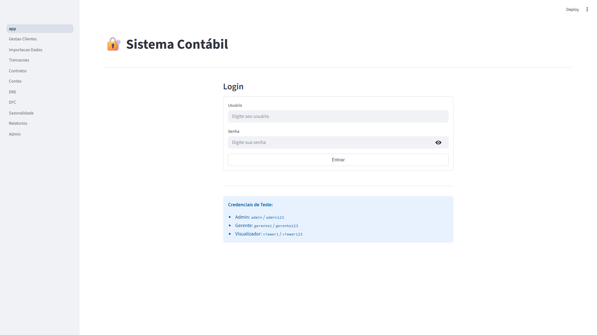
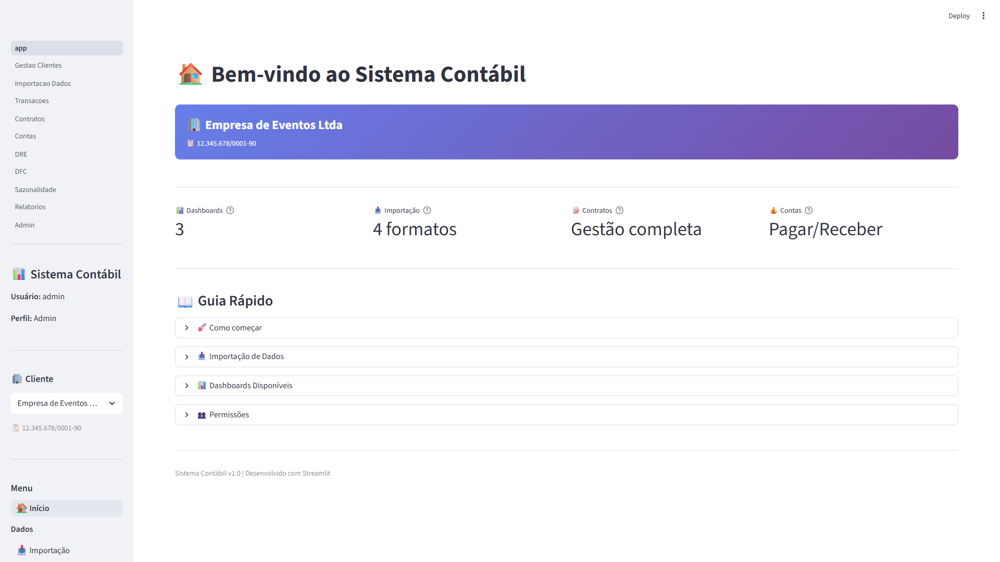
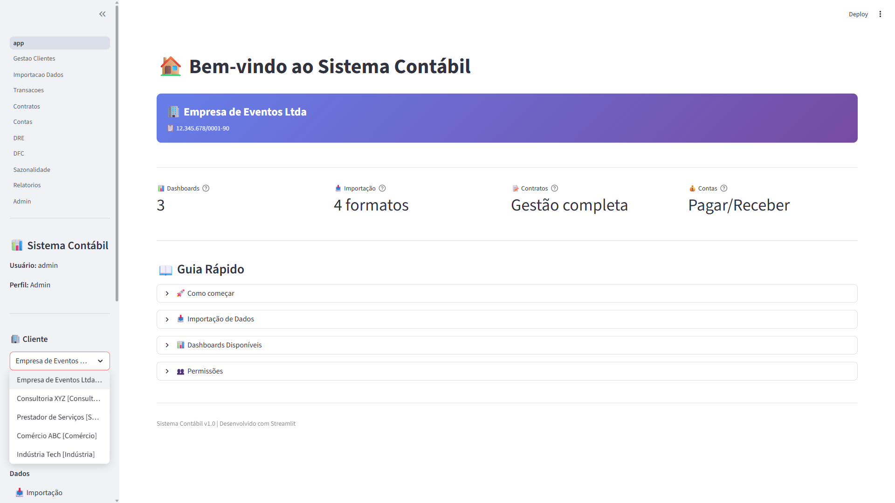
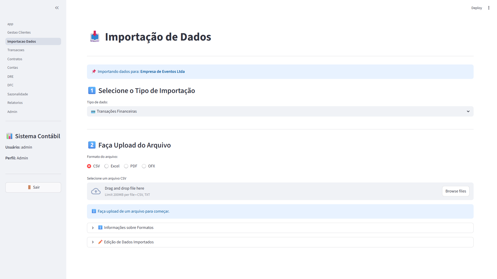
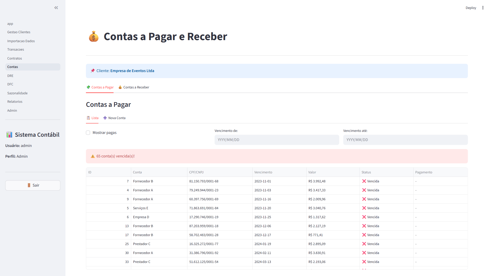
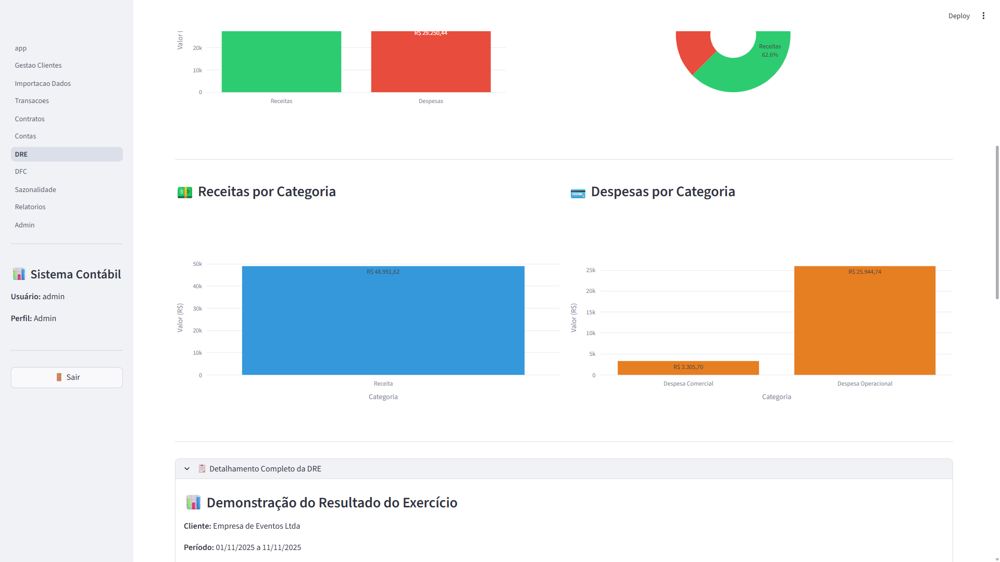
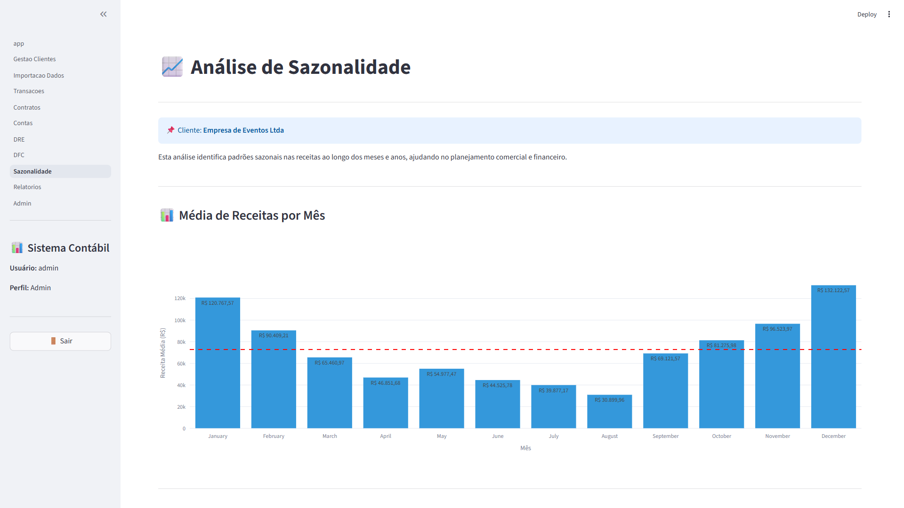

Este tutorial usa imagens reais do sistema. Para melhor experiência:
1. Abra o sistema em uma aba do navegador
2. Siga este tutorial em outra aba
3. Compare as telas
4. Pratique cada passo
Clique duas vezes no arquivo:
run.bat
Você verá esta janela:
O navegador abrirá automaticamente em:
http://localhost:8501

O que você vê:
- Título: "🔐 Sistema Contábil"
- Campo "Usuário"
- Campo "Senha"
- Botão "Entrar"
- Credenciais de teste exibidas
Digite:
- Usuário: admin
- Senha: admin123
Clique em: Entrar

Elementos da tela:
Sidebar (Esquerda):
- Informações do usuário
- Seletor de cliente
- Menu de navegação
Conteúdo Principal:
- Título "Bem-vindo"
- Card do cliente selecionado
- Cards informativos (4 colunas)
- Guia rápido (expandível)
Clique na lista suspensa:

Você verá:
- Empresa de Eventos Ltda [Eventos]
- Consultoria XYZ [Consultoria]
- Prestador de Serviços [Serviços]
- Comércio ABC [Comércio]
- Indústria Tech [Indústria]
Para pesquisar:
Digite: "eventos"
Resultado: Lista filtra mostrando apenas clientes com "eventos"
Clique em: 📥 Importação


Selecione: 🏦 Extratos Bancários
Selecione: CSV
Clique em: "Browse files"
Selecione: tests/sample_files/extrato_bancario_exemplo.csv
Você verá:
- Tabela com as primeiras 10 linhas
- Total de linhas: 18
- Colunas: Data, Descrição, Valor, Saldo
Mapeamento sugerido:
Data → date
Descrição → description
Valor → value
Saldo → balance
Mensagem:
✅ Todos os campos obrigatórios foram mapeados!
Clique em: 📥 Importar Dados
Mensagem:
✅ 18 registro(s) importado(s) com sucesso!
🎈 [Animação de balões]
Clique em: 💳 Transações
Elementos:
- Seletor de cliente no topo
- Filtros (Tipo, Data, Busca)
- Cards de estatísticas (3)
- Tabela de transações
Filtros disponíveis:
- Tipo: Entrada/Saída (multiselect)
- Data de/até
- Busca por descrição
Colunas:
- ID, Data, Tipo, Descrição, Valor, Categoria, Origem
Clique em: Tab "➕ Nova Transação"
Formulário:
- Campos em 2 colunas
- Data, Descrição, Valor, Tipo
- Categoria, Grupo, Subgrupo, Conta
Elementos:
- Dropdown de seleção
- Formulário preenchido
- Botões Salvar e Excluir
Clique em: 📝 Contratos

Colunas:
- ID, Contratante, Data Evento, Valor Serviço, Valor Total, Status, Tipo, Convidados
Clique em: 💰 Contas → Tab "💸 Contas a Pagar"

Alertas:
Clique em: 📊 DRE


Métricas:
- 💰 Receitas
- 💸 Despesas
- 📊 Resultado
- 📉 Margem

Clique para expandir:

Mostra:
- Total de transações
- Valor médio
- Tabela com transações individuais
Clique em: 💵 DFC


Clique em: 📈 Sazonalidade



Clique em: 📑 Relatórios
Clique em: 👥 Gestão de Clientes
Colunas:
- ID, Nome, Tipo, CPF/CNPJ, Status, Cadastro
Campos:
- Nome
- CPF/CNPJ
- Tipo de Empresa (dropdown)
- Ativo (checkbox)
Clique em: ⚙️ Administração
Windows:
1. Tela inteira: Pressione Print Screen
2. Janela ativa: Pressione Alt + Print Screen
3. Área selecionada: Pressione Windows + Shift + S
Salvar:
1. Abra Paint ou editor de imagem
2. Cole (Ctrl + V)
3. Recorte área desejada
4. Salve como PNG
5. Nomeie conforme número acima (ex: 01_cmd_iniciando.png)
Crie pasta:
contabil_system/
└── screenshots/
├── 01_cmd_iniciando.png
├── 02_tela_login.png
├── 03_tela_inicial.png
├── ...
└── 81_mobile_menu.png
Essenciais (mínimo):
- [ ] 02 - Tela de login
- [ ] 03 - Tela inicial
- [ ] 05 - Lista de clientes
- [ ] 11 - Preview de dados
- [ ] 12 - Mapeamento de colunas
- [ ] 14 - Importação sucesso
- [ ] 15 - Página transações
- [ ] 30 - Dashboard DRE
- [ ] 42 - Dashboard DFC
- [ ] 52 - Dashboard Sazonalidade
Completas (todas 81):
- [ ] Todas as telas listadas acima
screenshots/Compartilhe:
- TUTORIAL_COM_IMAGENS.md
- screenshots/ (pasta com todas as imagens)
1. Abra TUTORIAL_COM_IMAGENS.md
2. Converta para PDF (com imagens)
3. Distribua PDF único
1. Grave tela seguindo o tutorial
2. Adicione narração
3. Exporte como MP4
4. Compartilhe vídeo
Execute o sistema:
run.bat
Capture as telas:
Verifique:
Teste:
Distribua:
Tutorial visual completo estruturado!
Capture as telas e terá um tutorial visual completo! 📸
Se preferir, pode criar um vídeo tutorial:
Vantagem: Mais dinâmico e fácil de seguir!
Tutorial estruturado e pronto para screenshots! 🎬